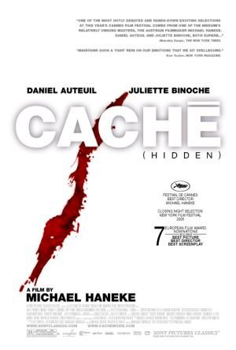
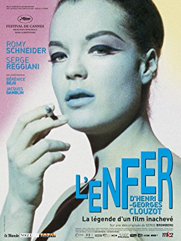
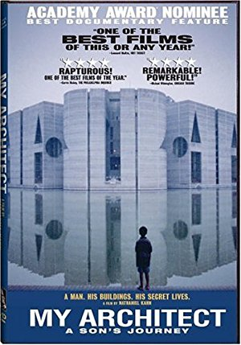
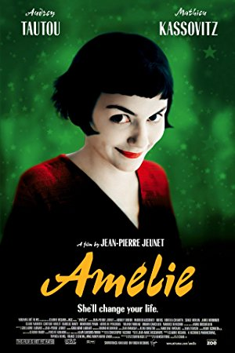

Season 46 (2011-2012)
-
 September 11, 2011Directed by James Marsh; Starring Philippe Petit, Jean François Heckel, Jean-Louis Blondeau, Annie Allix
September 11, 2011Directed by James Marsh; Starring Philippe Petit, Jean François Heckel, Jean-Louis Blondeau, Annie Allix
Man on Wire
UK/USA, 2008, 94 min, Color/B&W, PG-13
In 1974 tightrope walker Phillipe Petit and his cohorts masterminded a crime of international renown when they realized Petit's dream of performing a tightrope routine on a line strung between the Twin Towers of the World Trade Center. This engaging film details the planning and execution of the "artistic crime", recalling a more innocent time and honoring the memory of the Twin Towers as they existed before September 11, 2001. This film won the 2009 Academy Award for Best Documentary Feature.
-

October 9, 2011Directed by Michael Haneke; Starring Daniel Auteuil, Juliette Binoche, Maurice Bénichou, Annie Girardot
Hidden (Caché)
France, 2005, 117 min, Color, R, French w/subtitles
Michael Haneke's Caché (Hidden) taps into our primordial fear that we are being watched. When bourgeois couple Georges (Daniel Auteuil) and Anne (Juliette Binoche) begin receiving anonymous videotapes of their house and phone calls from strangers asking for Georges, the two begin to question their safety, and their pasts. As the tension builds, Anne comes to believe that Georges is harboring a secret. Directed with Hitchcock-like precision, Haneke presents a mystery with enough camera tricks and tension to keep you thinking about it long after the infamous final shot has faded.
Read Roger Ebert's review of Hidden at Great Movies. -
 November 13, 2011Directed by Michael Powell, Emeric Pressburger; Starring Deborah Kerr, Kathleen Byron, David Farrar, Jean Simmons, Sabu
November 13, 2011Directed by Michael Powell, Emeric Pressburger; Starring Deborah Kerr, Kathleen Byron, David Farrar, Jean Simmons, Sabu
Black Narcissus
UK, 1947, 101 min, Color, Not Rated
Anglican nuns attempt to establish a convent at the edge a sheer cliff in the Himalayas. Extreme conditions cause them to question their commitment to their task as they confront their demons in an extremely repressive atmosphere. Shangi-La run amok in a brilliant blaze of Technicolor, under the helm of director Michael Powell (The Red Shoes). Black Narcissus Won Oscars for Best Cinematography and Best Art Direction in 1948.
-
 December 11, 2011Directed by Charles Chaplin; Starring Charles Chaplin, Mack Swain, Tom Murray, Georgia Hale
December 11, 2011Directed by Charles Chaplin; Starring Charles Chaplin, Mack Swain, Tom Murray, Georgia Hale
The Gold Rush
USA, 1925, 95 min, B&W, Not Rated, Silent w/intertitles
The well-loved Chaplin classic stars Charlie as "The Lone Prospector" and features the legendary Dance of the Dinner Rolls as Charlie manages to triumph over extreme elements, starvation and unrequited love. This version appears with a voice-over narration added by Chaplin himself in a subsequent release.
Film Notes (Karen Bender): The term "Renaissance Man" describes a person who is well educated or who excels in a wide variety of subjects or fields. The prototype for such a person is Leonardo da Vinci, the original "Renaissance Man" who excelled in so many fields that they felt obliged to invent this term to describe him. Charles Spencer Chaplin, director and star of this month's film, might easily be another.
Charlie Chaplin was already a worldwide phenomenon when he wrote, directed, and starred in The Gold Rush. In addition to the aforementioned roles that he filled in this film, Chaplin wrote the musical score for this 1942 reissued version in which he also provided the voice-over that replaced the title cards from the 1925 version. His talent was massive and his perfectionism was legendary. Chaplin possessed an expressive face, a supple physique, and he played the cello quite well.
The Gold Rush is said to be one of Chaplin's least-improvised scripts, as he had worked on the idea for years prior to committing it to film. Chaplin initially conceived it as a means of conveying a supremely dark and tragic story, such as the cannibalistic tale of the doomed Donner party, in a comic fashion. By combining the Donner story line with the strike-it-rich tales of the Klondike Gold Rush, Chaplin effectively merged both story lines and a hit film resulted. Throughout the rest of his life, Chaplin repeatedly asserted that The Gold Rush was the film for which he would like to be remembered.
Here's the scenario: The Little Tramp (Chaplin) finds himself in the midst of the Gold Rush in the Klondike. Bad weather strands him in a remote cabin with a prospector (Mack Swain), who has found a large gold deposit, and an escaped fugitive (Tom Murray). They barely survive starvation, after which they part ways, with the prospector and the fugitive fighting over the prospector's claim, ending with the prospector receiving a blow to the head and the fugitive falling off a cliff to his death. The Tramp eventually finds himself in a gold rush town where he ultimately decides to give up prospecting and falls in love with a lonely saloon girl (Georgia Hale) whom he mistakenly thinks has fallen in love with him. He soon finds himself waylaid by the prospector he met earlier, who has developed amnesia and needs the Tramp to help him find his claim by leading him to the cabin.
The Gold Rush was a huge success in the US and worldwide. It is the fifth-highest grossing silent film in cinema history, taking in more than $4,250,001 at the box office in 1926, and the highest grossing silent comedy. Although it was truly a silent film, this re-released 1942 sound version of The Gold Rush received an Academy Award nomination for Best Sound Recording. Featuring the Dance of the Dinner Rolls and the shoe-eating sequences, we feel certain that you will strike it rich with this big-screen viewing of a timeless film treasure. -
 January 8, 2012Directed by Alfred Hitchcock; Starring Sylvia Sidney, Oskar Homolka, Desmond Tester
January 8, 2012Directed by Alfred Hitchcock; Starring Sylvia Sidney, Oskar Homolka, Desmond Tester
Sabotage
UK, 1936, 76 min, B&W, Not Rated
Based on the Joseph Conrad novel The Secret Agent, this 1936 thriller is not to be confused with Hitchcock's other 1936 film Secret Agent, or his 1942 film Saboteur. A man and his wife operate a small cinema in London. Unbeknownst to the wife and her teenaged brother, the husband is part of a gang of foreign saboteurs being hunted by Scotland Yard. Sabotage was produced in England and contains a sequence that Hitchcock later said that he regretted as too distasteful for the audience.
-
 February 12, 2012Directed by Josef von Sternberg; Starring Emil Jannings, Marlene Dietrich, Kurt Gerron, Rosa Valetti
February 12, 2012Directed by Josef von Sternberg; Starring Emil Jannings, Marlene Dietrich, Kurt Gerron, Rosa Valetti
The Blue Angel
Germany, 1930, 106 min, B&W, Not Rated, German w/subtitles
Concerned by his students' fascination with a sultry night club singer, a professor (Emil Jannings) sets out to investigate, becomes seduced by the fascinating Lola (Marlena Dietrich), and causes his own eventual destruction. Featuring Dietrich's iconic performance of "Falling in Love Again," this is a prime example of German Expressionism at its best.
-

March 11, 2012Directed by Serge Bromberg, Ruxandra Medrea; Starring Romy Schneider, Bérénice Bejo, Serge Reggiani, Jacques Gamblin
Inferno (L'enfer d'Henri-Georges Clouzot)
France, 2009, 102 min, Color, Not Rated, French w/subtitles
In 1964 French director Henri-Georges Clouzot (The Wages of Fear, Diabolique) embarked on his most ambitious film to date: L'Enfer. After a frenetic 18 days of shooting he suffered a heart attack, and the production was shut down. More than 40 years later, film archivist Serge Bromberg discovered 185 cans of footage and pre-production tests from L'Enfer and set out to tell the story of Clouzot's unfinished masterwork. Combining interviews with surviving members of the cast and crew with clips of the actual film, Bromberg offers a glimpse into one of cinema's legendary ill-fated productions.
-

April 8, 2012Directed by Nathaniel Kahn; Starring Edmund Bacon, Edwina Pattison Daniels, Balkrishna Doshi, Frank Gehry
My Architect: A Son's Journey
USA, 2003, 116 min, Color, Not Rated
My Architect is filmmaker Nathaniel Kahn's inquiry into the life and work of his father, renowned architect Louis Kahn. Through interviews with Frank Gehry, I.M. Pei, and his own mother and two half-sisters, the filmmaker tries to reconcile his father's achievements with his profound personal failings. He also travels the globe to view his father's legacy – the buildings he designed throughout the world.
-

May 13, 2012Directed by Jean-Pierre Jeunet; Starring Audrey Tautou, Mathieu Kassovitz, Rufus, Lorella Cravotta, Dominique Pinon
Amélie
France/Germany, 2001, 122 min, Color/B&W, R, French w/subtitles
An irresistible toast to life, Jean-Pierre Jeunet's Amélie follows the title character (Audrey Tautou) as she literally change the lives of those around her. When Amélie meets and falls in love with a shy adult-store worker, she realizes that, in helping to change other peoples' lives, she is disregarding her own. Propelled by Yann Tiersen's exhilarating musical score, Bruno Delbonnel's vivid cinematography, and Tautou's irresistible charm, Amélie ranks as one of the cinema's finest odes to life and love, and a refreshing homage to the golden age of Hollywood.
-
 June 10, 2012Directed by Vittorio De Sica; Starring Lamberto Maggiorani, Enzo Staiola, Lianella Carell, Elena Altieri
June 10, 2012Directed by Vittorio De Sica; Starring Lamberto Maggiorani, Enzo Staiola, Lianella Carell, Elena Altieri
Bicycle Thieves (Ladri di biciclette)
Italy, 1948, 89 min, B&W, Not Rated, Italian w/subtitles
A definitive work of Italian Neo-Realism, The Bicycle Thief tells the story of Antonio (Lamberto Maggiorana), an unemployed man in post-War Rome who finds a job pasting up posters – work requiring a bicycle. When the bicycle is stolen, Antonio and his young son, Bruno (Enzo Staiola), embark on a desperate search across the city. An indelible portrait of the bond between Antonio and Bruno, The Bicycle Thieves won a special Academy Award as "most outstanding foreign film", seven years before that category existed. In the words of Arthur Miller, "It is as though the soul of man had been filmed."
Read Roger Ebert's review of Bicycle Thieves (Ladri di biciclette) at Great Movies. -
 July 8, 2012Directed by Carol Reed; Starring Ralph Richardson, Michèle Morgan, Sonia Dresdel, Bobby Henrey
July 8, 2012Directed by Carol Reed; Starring Ralph Richardson, Michèle Morgan, Sonia Dresdel, Bobby Henrey
The Fallen Idol
UK, 1948, 95 min, B&W, Not Rated
Eight-year-old Phil (Bobby Henrey) idolizes Baines (Ralph Richardson), the butler to his ambassador father. As the unwitting witness to Baines' tea-room tryst with an embassy staffer, Phil becomes the solemn bearer of a secret. But when an idyllic afternoon at the zoo is followed by a nighttime tragedy, and those soft-spoken police arrive to ask all those polite questions, Phil enters a world of lies that unintentionally implicate his idol in murder. Author/screenwriter Graham Greene's personal favorite of his film adaptations (from his story, The Basement Room), The Fallen Idol was Greene's first collaboration with Carol Reed (followed by The Third Man), and ranks with the director's best work.
-
 August 12, 2012Directed by Peter Greenaway; Starring Anthony Higgins, Janet Suzman, Anne-Louise Lambert, Hugh Fraser
August 12, 2012Directed by Peter Greenaway; Starring Anthony Higgins, Janet Suzman, Anne-Louise Lambert, Hugh Fraser
Draughtsman's Contract
UK, 1982, 108 min, Color, R
Set in 17th-century England, this erotically charged film features an aristocratic wife (Janet Suzman) who commissions a young draughtsman (Anthony Higgins) to sketch her husband's property. As the draughtsman becomes entangled in the devious scheming in the idyllic estate, details emerge in his drawings that may reveal a murder. A feast of intricate wordplay, extravagant costumes and opulent photography, The Draughtman's Contract weaves a mystery around the maxim "draw what you see, not what you know."